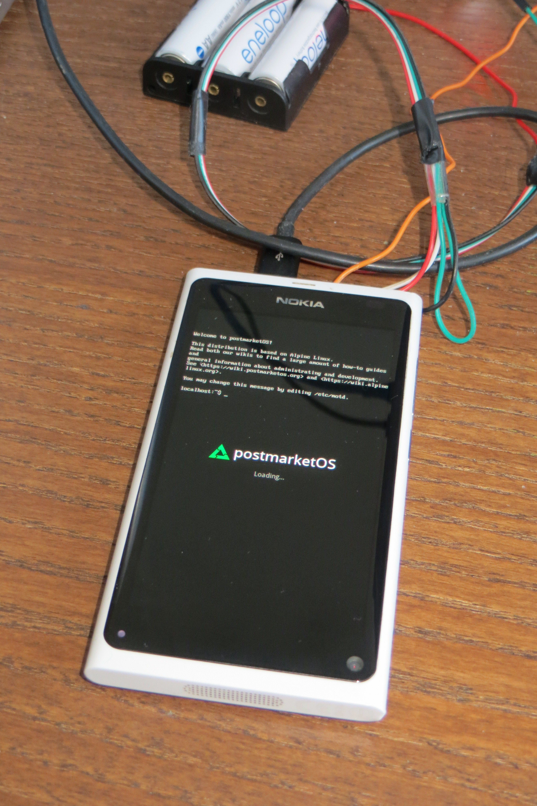

Nokia N9 (nokia-n9)
Jump to navigation
Jump to search
|
 postmarketOS loading screen with TTY on top | |
| Manufacturer | Nokia |
|---|---|
| Name | N9 |
| Codename | nokia-lankku |
| Released | 2011 |
| Category | testing |
| Original software | MeeGo |
| Original version | Harmattan 1.2 |
| Hardware | |
| Chipset | TI OMAP 3630 |
| CPU | Single-core 1.0 GHz Cortex-A8 |
| GPU | PowerVR SGX530 |
| Display | "Clear Black" AMOLED 480 x 854 px |
| Storage | 16/64 GB |
| Memory | 1 GB |
| Architecture | armv7 |
| Type | handset |
{kind=link}
| USB Networking |
Works
|
|---|---|
| Flashing | |
| Touchscreen |
Works
|
| Display |
Works
|
| WiFi |
Works
|
| FDE | |
| Mainline |
Works
|
| Battery | |
| 3D Acceleration |
Partial
|
| Audio | |
| Bluetooth | |
| Camera | |
| GPS | |
| Mobile data | |
| SMS | |
| Calls | |
| USB OTG | |
| NFC | |
| Accelerometer | |
|---|---|
| Magnetometer | |
| Ambient Light | |
| Proximity | |
| Hall Effect | |
| Barometer | |
| Power Sensor | |
| Camera Flash | |
|---|---|
| Keyboard | |
| Touchpad | |
| USB-A | |
| HDMI/DP | |
| Ir TX | |
| Ir RX | |
| Stylus | |
| Haptics | |
| Ethernet | |
| FOSS bootloader | |
| This device is still running on armhf, although the processor supports armv7. If you own it, change it and test it that way. |
Contributors
- filippz
- pavelmachek
Users owning this device
- Baptx (Notes: Does not boot (battery probably dead, was previously shutting down when connecting to network))
- Ecloud
- Jack Kekzoz
- Jja2000
- Linmob (Notes: runs stock OS)
- Nieldv
- Pavel
- Russanandres (Notes: Troubles with usb port)
- Sicelo
How to enter flash mode
This device is pretty similar to Nokia N950, with minor differences in kernel. Bootloader has same problems. See https://elinux.org/N950
Kernel can be started without flashing, using:
$ sudo /data/l/maemo/0xffff/src/0xFFFF -m kernel:vmlinuz-nokia-n9-dtb -m initfs:initramfs-nokia-n9 -l -b
Note that attempt to pass command line arguments will result in kernel not booting on some devices, and that by booting custom kernel you get permanent boot slowdown with "you have modified your system" message.
Notes
Installation
Might be possible using Nemo flashing image.
Photos
- Running XFCE4
- PowerVR SGX (TI 4.10.00.01) drivers with v4.15-rc3 kernel
- postmarketOS loading screen with TTY on top (alternative photo)
{kind=link}
{kind=link}
Links
- #1046 Add basic support for Nokia N9
- Device package
- Kernel package